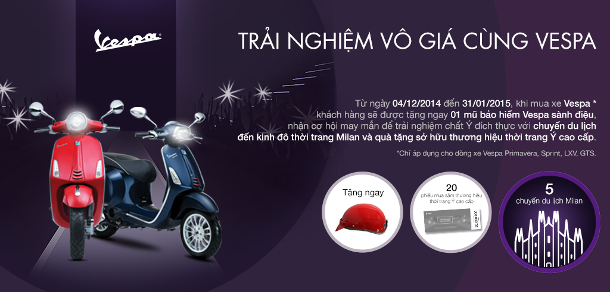

TRẢI NGHIỆM VÔ GIÁ CÙNG VESPA

LƯỚT VESPA, ĐÓN HÈ PHONG CÁCH

KHAO XE VESPA VUI TIỆC ĐẲNG CẤP

LỄ BỐC THĂM TRÚNG THƯỞNG CỦA CHƯƠNG TRÌNH "TRẢI NGHIỆM VÔ GIÁ CÙNG VESPA
ƯU ĐÃI HẤP DẪN NHẤT LẦN ĐẦU TIÊN ÁP DỤNG CHO VESPA PRIMAVERA
Hiểu được niềm đam mê mà các tín đồ yêu cái đẹp luôn dành cho Vespa Primavera, Vespa mang đến chương trình ưu đãi hấp dẫn, lần đầu tiên áp dụng cho dòng xe này: "HÈ LÃNG MẠN CÙNG PHONG CÁCH Ý" - Hỗ trợ 100% phí trước bạ khi mua Vespa Primavera, từ ngày 01.07 đến hết 30.09.2015. Chương trình áp dụng cho đại lý chính hãng của Vespa trên toàn quốc. Nhắc đến Vespa Primavera, sẽ là thiếu sót khi không nhắc đến kiểu dáng tinh tế, kế thừa vẻ đẹp từ huyền thoại Vespa 946. Hệ thống đèn pha đầu tròn mềm mại, đường cong hấp dẫn được tạo ra trên hệ thống khung thép nguyên khối, cách phối màu tinh tế giữa thân xe và yên xe, Vespa Primavera tự tin khoác "chiếc áo" màu sắc hòa vào nhịp sống hiện đại. Vespa Primavera đươc trang bị động cơ 3V i.e. phun xăng điện tử tiên tiến với mức tiêu thụ nhiên liệu cực thấp đạt 64km/l tại vận tốc 50km/h và lượng khí thải giảm 30% so với trước đây. Bên cạnh các tính năng nổi bật như dung tích bình xăng lớn, cốp đựng đồ rộng, khóa từ chống trộm, chế độ bảo hành 3 năm tiên phong trong các dòng xe tay ga tại Việt Nam cũng giú Vespa Primavera lại "ghi điểm" một lần nữa, như một sự đảm bảo cho những trải nghiệm tốt đẹp trên mọi nẻo đường. Là một trong những dòng xe đầu tiên đại diện cho tuyên ngôn "Do you Vespa?" trẻ trung, phong cách, Vespa Primavera thể hiện một hình ảnh hiện đại, tiên phong trong lối sống phóng khoáng, tự tin thể hiện chính mình. Với hướng đi này, Vespa Primavera tin rằng cá tính của chủ sở hữu sẽ được thể hiện rõ nét hơn khi lựa chọn chiếc xe đúng tính cách của mình..
==========CHƯƠNG TRÌNH ƯU ĐÃI KHÁC==========